Córtex Estudos · 4º Semestre · Anato Pato II · Aula 01
Patologia do Esôfago
A aula inteira explicada do zero — malformações congênitas, distúrbios de motilidade, varizes, esofagites, DRGE, Barrett e os dois cânceres — na ordem e com as ênfases que a professora deu, com todos os termos definidos na primeira aparição.
1 · O funil do raciocínio clínico-patológico
Antes de qualquer doença, a aula abriu com um caso — porque é assim que a disciplina inteira vai funcionar: partir da queixa e afunilar até a hipótese.
🩺 Caso de abertura — Adalberto
Adalberto, 55 anos, 80 kg, regular estado geral, hipertenso e diabético em acompanhamento. Procura a UBS com dor retroesternal, náuseas, pirose e sensação de regurgitação ácida há mais de 6 meses; 3 episódios de vômitos pós-refeição no último mês; desânimo e cansaço. Tabagista há 30 anos, etilista eventual, alimentação desregulada. Exame clínico e hemograma/leucograma sem achados relevantes. Qual grupo de diagnósticos diferenciais é o mais provável, e qual exame pedir?
Vamos definir o vocabulário que apareceu aí:
No caso, o quadro é crônico e irritativo, sem perda ponderal (perda de peso mensurável) e sem disfagia — nada sugerindo massa. A resposta é o grupo das doenças inflamatórias esofágicas, investigadas por EDA. Congênitas se manifestariam no nascimento/infância, não aos 55 anos; neoplasias (benignas ou malignas) pediriam disfagia, massa ou emagrecimento.
🎯 O que a professora destacou
Ela repetiu isso várias vezes e disse que só aprendeu na pós-graduação: o Robbins descreve mais de 5 mil doenças, mas TODAS cabem em 4 grupos. Esse funil é o jeito de pensar da Pato II inteira, e ela organiza as próprias aulas nessa ordem:
Os 4 grupos de processos patológicos
- 1Doenças congênitas — falha na embriogênese; manifestam-se ao nascimento ou na infância (por isso a Pato traz poucas — o resto é da Pediatria).
- 2Alterações adquiridas não inflamatórias — algo aconteceu sem inflamação como evento primário — no esôfago, as disfunções de motilidade.
- 3Processos inflamatórios — "o campeão de bilheteria". Subdividir sempre: agudo × crônico · infeccioso × não infeccioso · autoimune × imunomediado.
- 4Processos neoplásicos — benignos × malignos. O grupo que menos queremos encontrar.
Diante de qualquer lesão, as perguntas do funil são: quem é o hospedeiro (epidemiologia)? Qual o padrão de sinais e sintomas (alteração morfológica macro/micro, fisiopatologia)? Qual o tempo de evolução (ontem ≠ há 3 meses — separa agudo de crônico)? Daí saem os DDs, a HD e a história natural da doença.
2 · Recordatório: anatomia, histologia e embriologia
Anatomia que importa para a patologia
- O esôfago é um tubo muscular oco (~25–40 cm, varia com a altura) dividido em 3 terços — cervical, torácico (o maior) e abdominal —, com 3 pontos fisiológicos de estreitamento (constrições).
- Constrição superior (nível da cartilagem cricóide / m. cricofaríngeo — o EES): controla o início da deglutição. No 1º terço ainda há músculo estriado esquelético (você "sente" engolir); do torácico para baixo é músculo liso — involuntário. Por isso dá para engolir de cabeça para baixo: a peristalse não depende da gravidade.
- Constrição média (adjacente ao arco aórtico e à bifurcação da traqueia): pouco citada nas patologias, mas explica por que câncer de esôfago tem prognóstico ruim — ali é um "bolo" de estruturas nobres (aorta, traqueia, pericárdio) que um tumor invade por contiguidade.
- Constrição inferior = EEI (esfíncter esofágico inferior), 2–4 cm acima da junção esofagogástrica: deixa o alimento passar e impede o refluxo do conteúdo gástrico — é o principal mecanismo protetor. Não é 100%: pequenos refluxos fisiológicos acontecem todo dia, compensados pelo clearance.
- Clearance esofágico — a "limpeza" contínua feita pela saliva (~3 L/dia) + secreção das glândulas esofágicas + peristalse descendente.
- Na endoscopia, as distâncias são medidas a partir da arcada dentária superior (ADS) — é por isso que o laudo diz "aos 35 cm da ADS, presença de lesão".
Histologia — a mucosa é mais que o epitélio
Parede do esôfago, do lúmen para fora
- 1Mucosa — epitélio pavimentoso (escamoso) estratificado NÃO queratinizado (~15–30 camadas) + lâmina própria (conjuntivo frouxo vascularizado que nutre o epitélio avascular) + muscular da mucosa.
- 2Submucosa — conjuntivo denso com vasos e as glândulas esofágicas (mucosas) — especificidade histológica do órgão; lubrificam e participam do clearance.
- 3Muscular externa (do órgão) — circular interna + longitudinal externa (predominantemente lisa): as duas direções fazem a peristalse.
- 4Adventícia — fáscia conjuntiva nos terços superiores; só o esôfago abdominal tem serosa. Isso volta lá no câncer.
🎯 A fronteira que define carcinoma in situ
A mucosa = epitélio + lâmina própria + muscular da mucosa. A muscular da mucosa é a fronteira entre mucosa e submucosa — funciona, junto com a membrana basal, como o limite conceitual: enquanto a proliferação maligna não ultrapassa membrana basal/muscular da mucosa, é carcinoma in situ (ou tumor intramucoso). Ultrapassou = invasivo. Guarde agora, porque é assim que os laudos de câncer vão ser escritos.
A mucosa normal é lisa, úmida, rosa-pálida — a professora compara com a mucosa da bochecha ("se o epitélio fosse rugoso, o alimento não desceria sem traumatizar a parede"). Esse padrão visual importa: quase toda doença desta aula começa como mudança de cor, brilho ou relevo vista na EDA.
Embriologia em uma frase
Entre a 4ª e a 6ª semanas, o intestino primitivo anterior se bifurca: um broto vira traqueia, o tubo posterior segue como esôfago. Falhas nessa separação — ou na reprogramação/diferenciação das células — geram as malformações congênitas do próximo tópico.
3 · Malformações congênitas
Patogênese geral: falhas na embriogênese e persistência de restos de tecidos não maduros — tanto falha de formação quanto falha do desaparecimento de um tecido.
Ectopias (heterotopias)
- Aparecem como "patches" (adesivos) — geralmente assintomáticas, achados de EDA (área com coloração diferente na mucosa).
- Microscopia: ilhas de epitélio colunar glandular do tipo gástrico (mais frequente) ou pancreático no meio do epitélio escamoso.
- Se o tecido ectópico for funcional, produz HCl/enzimas dentro do esôfago — que não foi feito para pH baixo → inflamação localizada e disfagia.
🔗 Isso reaparece no Barrett
Tecido glandular no esôfago tem dois donos possíveis: ectopia congênita (1/3 superior, presente desde sempre) e metaplasia de Barrett (adquirida, no 1/3 distal, contígua à junção). A professora cobrou exatamente esse DD na discussão do caso final.
Atresias e fístulas
- Quadro clássico ao nascimento: na primeira mamada — engasgos, tosse, cianose, regurgitação abrupta, risco de broncoaspiração. Manobra diagnóstica inicial: a sonda nasogástrica "dobra", batendo na barreira.
- Classificação de Gross: o tipo mais comum (>80%) é o tipo C = atresia + fístula traqueoesofágica distal.
- Fístulas pequenas → aspiração (pneumonias de repetição), sufocamento, sequelas por hipóxia. Fístula completa é incompatível com a vida → cirurgia urgente na neonatologia (anastomose para reconstrução). Hoje muitas são vistas ainda no pré-natal (USG morfológico).
- Podem acompanhar outras malformações (cardíacas, geniturinárias, síndrome de Down).
4 · Distúrbios de motilidade
Grupo das adquiridas não inflamatórias: o problema é a "obstrução funcional". A deglutição é um processo complexo: as camadas musculares + os plexos submucoso (Meissner) e mioentérico (Auerbach) + o nervo vago (X par), com sinalização adrenérgica e colinérgica, coordenam ondas peristálticas descendentes. Patogênese das disfunções de motilidade = quebra desse ritmo (doenças degenerativas — como Alzheimer avançado, que a professora ilustrou com o próprio pai —, Chagas, traumas raquimedulares, neuropatias).
Acalásia
A mais comum das disfunções de motilidade: ausência/dificuldade de relaxamento do EEI. O alimento desce e "entala" na transição — o paciente descreve exatamente isso.
🎯 A tríade da acalásia (cobrada como conjunto)
- Aperistalse — falta de peristaltismo do corpo esofágico;
- Aumento do tônus basal do EEI — contração basal exacerbada;
- Relaxamento incompleto do EEI à deglutição.
- Etiopatogenia: primária — degeneração comprovada dos neurônios inibitórios do esôfago distal; secundária — outra doença destrói o plexo, o grande exemplo é a doença de Chagas (tropismo do T. cruzi por tecido nervoso → destruição do plexo mioentérico → megaesôfago: o alimento estagna e dilata o órgão); idiopática — sem causa identificada.
- Clínica: disfagia insidiosa e progressiva, primeiro para sólidos, depois líquidos — casos avançados nem a saliva descem.
- Imagem clássica: esofagograma com "bico de pássaro" — esôfago dilatado que afila progressivamente até o contraste passar gota a gota.
- Bases do tratamento: clínico (nitratos — relaxam a musculatura), dilatação pneumática por balão, e nos graves cirurgia (miotomia; esofagectomia em último caso).
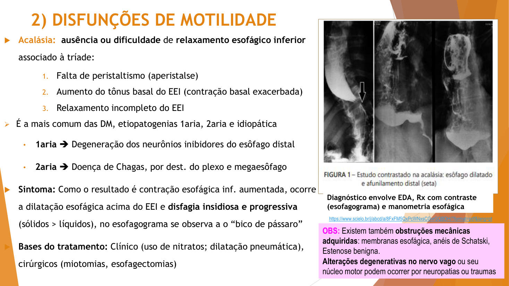
Além da acalásia existem obstruções mecânicas adquiridas: membranas esofágicas, anéis de Schatzki (membrana anelar no esôfago distal — apareceu na questão ENAMED do fim da aula), estenoses benignas e divertículos.
Hérnia de hiato
O oposto funcional da acalásia: em vez de esfíncter hipertônico, um esfíncter incompetente num hiato alargado.
| Deslizante (~90%) | Paraesofágica (~10%) | |
|---|---|---|
| O que acontece | O fundo gástrico sobe e volta ("desliza") pelo hiato | Parte do estômago fica posicionada ao lado do esôfago no tórax, sem voltar |
| Como aparece na EDA | Linha Z (JEG) ≥2 cm acima do pinçamento diafragmático | Não se vê diretamente — exige manobra de retrovisão |
| Risco | Associação forte com DRGE | Encarceramento/estrangulamento → necrose, perfuração — emergência |
- Etiologia: desconhecida; majoritariamente progressão da incompetência do EEI ou de esofagites crônicas de refluxo que sobrecarregam e dilatam os pilares. Associação com fraqueza muscular/perda de elasticidade após os 50 anos, sedentarismo, obesidade (pressão intra-abdominal), senescência.
- Só ~10% são sintomáticas (pirose + dispepsia); a maioria é achado de exame. Complicações possíveis: hematêmese, perfuração.
- Bases do tratamento: conforme sintomas/grau — clínico (tratar a DRGE, perder peso) ou cirúrgico (fundoplicatura: usa o próprio fundo gástrico para reforçar o esfíncter e reposicionar a junção).
🩺 Lendo o laudo de EDA como a professora leu
"…A linha de transição esofagogástrica situa-se 2 cm acima do nível do pinçamento diafragmático…" → o fisiológico é a linha Z (transição do epitélio escamoso esofágico para o colunar gástrico) coincidir com o pinçamento do diafragma. Linha Z acima do pinçamento = tecido gástrico subiu = hérnia de hiato por deslizamento. O mesmo laudo descrevia erosões ("ocupando menos de 75% da luz, não confluentes") — sinais da esofagite associada.
5 · Varizes esofágicas
Não é distúrbio de motilidade — é doença vascular do 1/3 distal, e a relação é anatômica: o sangue venoso do TGI passa pelo fígado (veia porta) antes da circulação sistêmica.
- Etiologia: doença hepática alcoólica/cirrose (varizes em ~90% dos cirróticos) e esquistossomose.
- Patogênese: fibrose hepática → hipertensão portal prolongada → o sangue busca canais colaterais → o plexo venoso submucoso do esôfago distal (e do estômago proximal — varizes gástricas concomitantes são frequentes) fica dilatado, tortuoso e congesto.
- Clínica: geralmente assintomáticas… até romperem: hemorragia digestiva alta (HDA) de difícil manejo — emergência médica (tamponamento por balão, endoscopia). Não são visíveis externamente (isso seria telangiectasia).
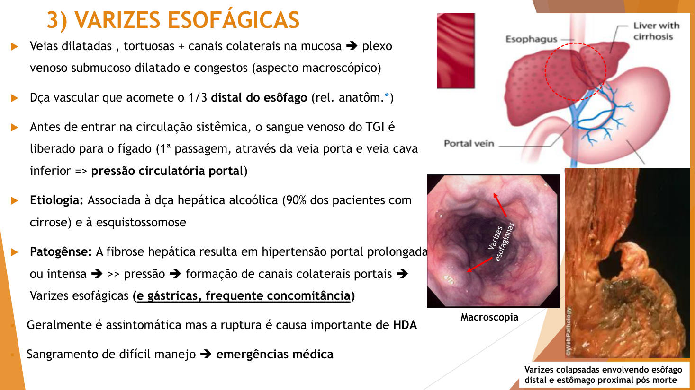
🎯 Macroscopia ≠ aspecto clínico
A partir daqui a aula passa a mostrar dois tipos de imagem: aspecto clínico (tecido vivo, na endoscopia) e macroscopia (peça de biópsia/cirúrgica ou cadavérica, antes do microscópio). Nos laudos, a macroscopia descreve coloração, consistência e superfície da peça.
6 · Esofagites agudas
🎯 Regra de nomenclatura que ela repetiu
Esofagite aguda costuma se chamar só "esofagite". Inflamação crônica ganha nome próprio — "doença do refluxo gastroesofágico", "esôfago de Barrett". Vale para outros órgãos também.
A mucosa escamosa inflama ao ser agredida por irritantes químicos (álcool, ácidos e álcalis corrosivos, fluidos muito quentes — o cigarro chega a ~200 °C na boca —, refluxo de HCl), por doenças bolhosas de pele que também acometem mucosa (ex.: pênfigo) e por agentes biológicos. Sintomas comuns a todas, variando com o grau: pirose, dispepsia, regurgitação ácida, dor retroesternal e, progressivamente, disfagia, odinofagia, obstrução, emagrecimento.
Esofagites infecciosas
- Patogênese: fúngica (Candida sp.), viral (HSV, CMV), bacteriana (menos frequente). Quase sempre num contexto de imunossupressão ou disbiose — a Candida faz parte da microbiota normal; ela vira doença quando a vigilância imune cai (acamados, idosos, quimioterapia, AIDS).
- Normalmente autolimitadas (imunocompetência = resolução). Se persistem → cultura ou biópsia para guiar tratamento sistêmico.
- Aspecto clínico: mucosa flogística (hiperemia, dor, perda de função), lesões leucoplásicas (placas brancas) ou eritroplásicas (avermelhadas); necrose é rara. Placas brancacentas destacáveis = muito sugestivo de candidíase; lesões vesículo-ulcerosas = muito sugestivo de herpes.
- Microscopia (quando há amostra): Candida — coloração PAS evidencia hifas e leveduras entre as células escamosas; HSV — células gigantes multinucleadas com inclusões nucleares (células de Tzanck).
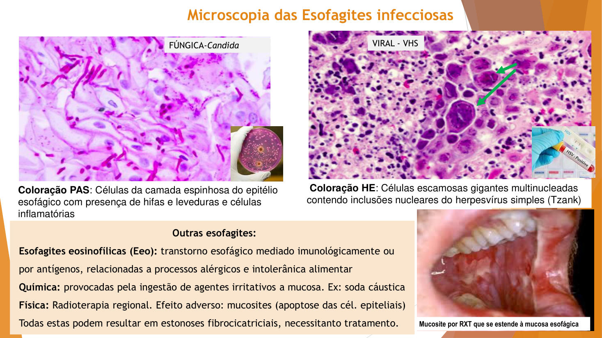
🎯 Dica direta de prova
"Aspecto microscópico de esofagite aguda a gente não cobra — porque na prática quase não se faz biópsia de processo agudo." Biópsia entra quando a lesão persiste ou não responde ao tratamento. (A microscopia que cai é a das crônicas — DRGE e Barrett.)
Outras esofagites do slide
- Eosinofílica (EEo): imunomediada/antígeno-mediada, ligada a alergias e intolerâncias alimentares — em franca ascensão.
- Química: ingestão de agentes irritativos/corrosivos (ex.: soda cáustica em tentativa de suicídio).
- Física: radioterapia regional (tórax, cabeça e pescoço) → mucosite por apoptose das células epiteliais, que se estende à mucosa esofágica.
- Todas podem evoluir com estenoses fibrocicatriciais que precisam de tratamento.
7 · DRGE — doença do refluxo gastroesofágico
Definição: esofagite crônica e sintomática causada por fluxo retrógrado do conteúdo gástrico para o esôfago (ou boca), sem esforço e persistente, com sintomas progressivos e complicações. É o diagnóstico gastrointestinal mais frequente do mundo ocidental e o maior responsável pelas esofagites graves. Note a lógica: refluxo eventual todo mundo tem; vira doença quando os mecanismos de proteção quebram e os sintomas se instalam.
Os mecanismos de proteção (e como quebram)
| Mecanismo protetor | O que o derrota |
|---|---|
| Pressão basal normal do EEI | Envelhecimento, tabaco, álcool, depressores do SNC (psicotrópicos relaxam o esfíncter), hérnia de hiato |
| Compressão pelos pilares diafragmáticos | Dilatação dos pilares (hérnia de hiato) |
| Posição oblíqua da JEG (ângulo agudo que faz "sobra" protetora) | Ruptura progressiva da junção; hérnia |
| Gravidade (postura ereta mantém o líquido no fundo gástrico) | Vida deitada/sentada — a professora citou "gamers com refluxo aos 21 anos"; bebês (dieta líquida + posição supina + esfíncter imaturo) |
| Esvaziamento gástrico rápido | Retardo do esvaziamento (refeição gordurosa), aumento da pressão intra-abdominal (obesidade, gravidez) |
| Saliva + clearance esofágico | Redução de salivação (senilidade), pH que não neutraliza |
🎯 O decúbito que protege (ela desenhou até acertar)
Como a JEG é oblíqua e a grande curvatura gástrica fica à esquerda, deitar em decúbito lateral ESQUERDO deixa o líquido acumulado na curvatura, longe da junção — protege. Decúbito direito aproxima o líquido do esôfago — piora. É orientação prática de tratamento.
Clínica e diagnóstico
- Mais frequente em adultos 40+, crescendo em jovens sedentários e presente em bebês.
- Sintoma cardinal: pirose; com a progressão, engasgos noturnos, comprometimento do sono, e sintomas atípicos: rouquidão, faringite, tosse, dor torácica, microbroncoaspirações que mimetizam doença pulmonar ("tratava asma, era refluxo").
- Complicações estruturais: erosões e ulcerações (a injúria principal é o HCl persistente) e, tardiamente, estenose péptica com disfagia (fibrose cicatricial).
- Diagnóstico: queixa clínica + alterações endoscópicas + pHmetria (pH esofágico caindo a 4–3,5).
Classificação endoscópica de Los Angeles
Todo laudo de esofagite erosiva usa: graus A → D, conforme o número/tamanho das erosões (menores ou maiores que 5 mm) e a porcentagem da circunferência acometida. A = 1 erosão ≤5 mm restrita a uma prega; D = erosões confluentes tomando quase toda a circunferência.
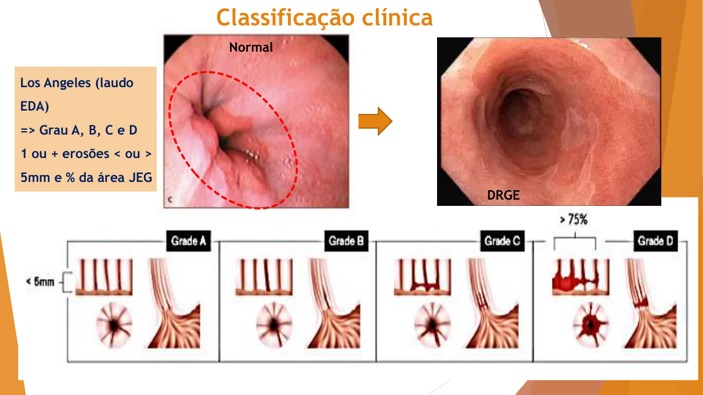
Morfologia
- Aspecto clínico: áreas localizadas de mucosa nacarada (rosa-vivo aveludado), hiperemiada ou eritematosa, com ou sem erosão. Macroscopia (peça): coloração branco-acinzentada a pardo-clara, consistência macia, superfície lisa.
- Microscopia (leve): discreta hiperemia e infiltrado, erosões superficiais. (moderada/severa): hiperplasia da camada basal (o epitélio acelera mitoses para repor as células destruídas pelo ácido), alongamento das papilas, linfocitose/eosinofilia intraepitelial (exocitose), lâmina própria e submucosa com vasos dilatados e congestos, infiltrado mononuclear (linfócitos e plasmócitos). Casos severos: descolamento epitelial, necrose.
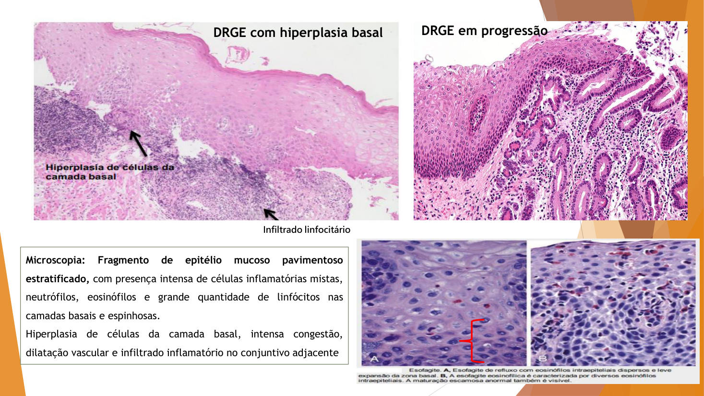
⚠️ Omeprazol não é cura
Os IBPs (inibidores de bomba de prótons) reduzem o pH do refluxato — tratamento sintomático, que não corrige esfíncter, hérnia, postura, peso. No caso final da aula, o paciente usou omeprazol por conta própria "sem melhora" — e evoluiu com complicação.
8 · Esôfago de Barrett
É a complicação da DRGE não tratada — uma resposta adaptativa do tecido à injúria prolongada. A professora fez a turma deduzir: "se você fosse um tecido esofágico inteligente apanhando de ácido, em que célula se transformaria?" — não na gástrica (produz mais ácido), e sim na intestinal, cheia de células caliciformes produtoras de muco, que fazem uma "paredinha" protetora.
- Epidemiologia: homens brancos, 40–60 anos; mais frequente no Sul do Brasil — pela etnia e pela ingestão habitual de bebida muito quente (o chimarrão pela temperatura, não pela erva).
- Clínico/macro: manchas/línguas avermelhadas aveludadas subindo a partir da JEG — "mucosa em salmão", bem delimitada. Classificação endoscópica: segmento curto <3 cm; longo ≥3 cm.
- Micro: mucosa com metaplasia intestinal (epitélio glandular com caliciformes — vacúolos de mucina) contígua ao epitélio escamoso do terço distal, com infiltrado e vasos congestos.
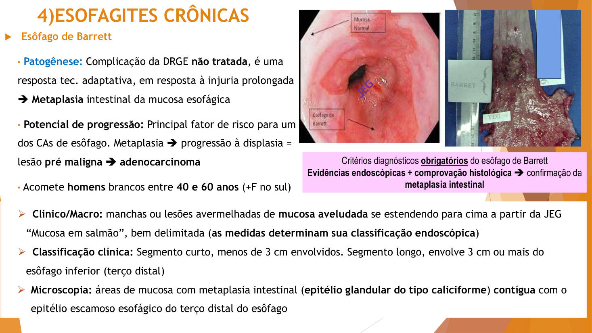
🎯 Critério diagnóstico OBRIGATÓRIO (ela bateu nessa tecla o caso inteiro)
Endoscopia + comprovação histológica da metaplasia intestinal. Uma sem a outra não fecha Barrett. A mancha vermelha sozinha pode ser só DRGE; a metaplasia na biópsia sem a imagem pode ser uma heterotopia. Precisa das duas.
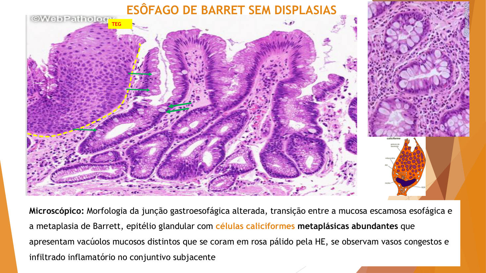
O problema: potencial de progressão
- Metaplasia sem displasia é reversível — tratando o refluxo, o tecido pode voltar.
- Mas a metaplasia pode progredir para displasia (atipia arquitetural + citológica) → lesão pré-maligna → adenocarcinoma. Barrett é o principal fator de risco para adenocarcinoma de esôfago.
- Com displasia, a classificação muda: sai Los Angeles, entra a classificação de Viena (1–5). Displasia de alto grau ≈ quase carcinoma in situ — glândulas dismórficas, hipercromasia, pleomorfismo, perda da polaridade nuclear — raríssimamente reversível, exige seguimento obrigatório e tratamento agressivo (crioablação/cirurgia; risco de progressão ~30%).
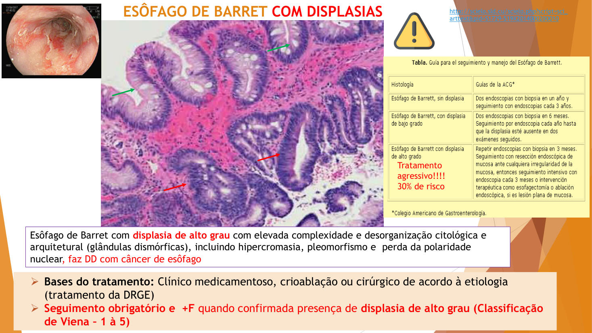
Lacerações de Mallory-Weiss
Fechando os achados da JEG: vômitos repetidos/induzidos (pós-libação alcoólica, "o dia seguinte do churrasco"), contrações retrógradas e falha de relaxamento geram lacerações lineares transitórias na junção — as lacerações de Mallory-Weiss. Podem sangrar (hematêmese leve), mas se não há sintomatologia persistente e a EDA seguinte mostra reparo, tudo bem: o problema, como sempre, é a persistência.
9 · Neoplasias benignas
Podem se originar de qualquer tecido constitutivo do órgão (epitelial, conjuntivo, muscular, nervoso, vascular, adiposo). São de crescimento lento e intraluminal, sem progressão maligna via de regra, pouco sintomáticas (a luz do esôfago é ampla) — muitas vezes achados incidentais. Nomenclatura pelo tecido de origem; a confirmação é sempre histológica, e o laudo benigno vem acompanhado da frase-chave: "ausência de atipias ou mitoses atípicas".
Papiloma escamoso
- Patogênese: proliferação do próprio epitélio escamoso associada a HPV de BAIXO risco oncogênico — subtipos 6 e 11 (contato direto ou autoinoculação). Não confundir com HPV 16/18 (alto risco, câncer de colo do útero).
- Clínico/macro: nódulo papilomatoso/digitiforme (dedinhos), leucoplásico ou normocromático, geralmente pedunculado (base estreita — facilita a biópsia excisional endoscópica, que é o tratamento).
- Micro: queratinócitos hiperplásicos (espessamento muito além das ~30 camadas normais), paraqueratinização (formação de "calo" por trauma alimentar num epitélio que não deveria ter queratina), infiltrado inflamatório e — a palavra do laudo — coilocitose: halos claros perinucleares, marca citopática de infecção viral. Não é patognomônica, mas coilocitose + papiloma esofágico = HPV.
Leiomioma (e o lipoma)
- Leiomioma: proliferação benigna espontânea de músculo liso — tipicamente da muscular da mucosa. Nódulo séssil (base larga), mais profundo, firme/fibroso, normocromático; sintomas dependem do tamanho.
- Micro: feixes uniformes entrelaçados de células musculares lisas, citoplasma eosinofílico fibrilar, núcleos alongados, sem atipias nem mitoses. Tratamento: excisão endoscópica (guiada ou não por US).
- Lipoma: outro benigno comum (tecido adiposo, mais amarelado) — como cresce numa luz ampla, pode atingir grandes volumes.
10 · Neoplasias malignas
Epidemiologia (INCA): ~12 mil casos novos/ano no Brasil; no top 10 dos cânceres e 5º–6º em homens; ligado a tabaco e álcool. O início é insidioso e assintomático por anos (a luz ampla acomoda o tumor) → descoberta em estadiamento avançado, com disfagia progressiva, odinofagia, hemorragia (menos frequente), tosse e rouquidão. Patogênese: multifatorial — acúmulo de alterações genéticas/epigenéticas ativando vias carcinogênicas em queratinócitos ou células glandulares (ex.: mutações de p53, CDKN2A).
🎯 Por que os dois campeões são esses (raciocínio que ela cobrou)
Epitélios são tecidos de células lábeis — proliferam a vida toda, então acumulam mutações: por isso o câncer nº 1 é do epitélio escamoso (CCE). E o nº 2 nasce do tecido glandular metaplásico do Barrett (adenocarcinoma) — adenocarcinoma de glândula esofágica própria é raro. Cada um tem até endereço: CCE = terços médio/superior (contato direto com tabaco/álcool); adenocarcinoma = terço distal (onde vive o Barrett), podendo invadir a cárdia.
Carcinoma de células escamosas (CCE / espinocelular / epidermóide)
- O mais comum no Brasil (~80%); homens 50+, mais frequente em negros; terços médio e superior.
- Fatores: tabaco + álcool com sinergismo; deficiência de vitaminas A e C (reparo/vigilância deficientes); nitrosaminas e alimentos em conserva contaminados por Aspergillus; acalásia persistente (estase crônica) predispõe.
- Clínico/macro: erosões, placas leucoplásicas ou úlceras de bordas endurecidas → massas infiltrativas ou exofíticas/vegetantes (crescem "soltas" para a luz, como couve-flor).
- Micro: queratinócitos atípicos hipercromáticos (núcleos roxos marcados), pleomórficos (formas/tamanhos variados), com cariomegalia exuberante, mitoses atípicas em todas as camadas, pérolas córneas (queratina em nódulos concêntricos — típico de CCE), resposta inflamatória e neoangiogênese.
- Progressão: displasia escamosa → neoplasia intraepitelial → carcinoma in situ (membrana basal/muscular da mucosa preservadas) → invasivo → metástase, principalmente por contiguidade (traqueia, aorta, pericárdio — lembra da 2ª constrição) e por via linfática (rede linfática esofágica é abundante).
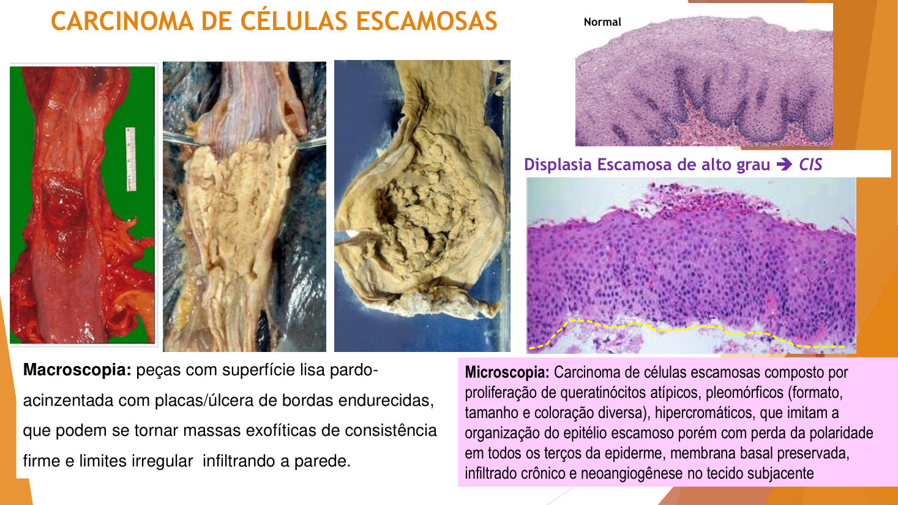
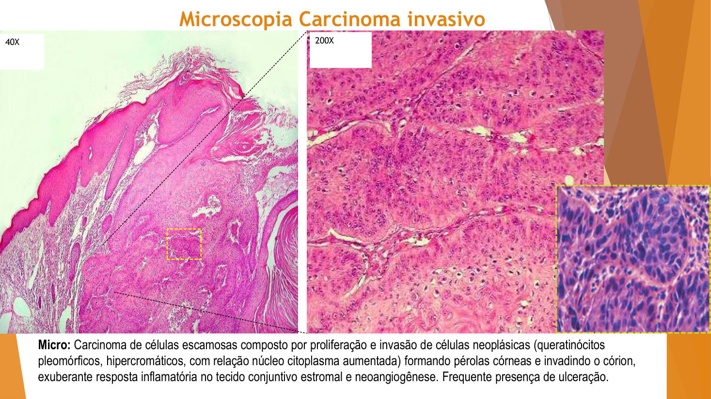
Adenocarcinoma
- Menos prevalente que o CCE no Brasil (mas nº 1 em alguns países do hemisfério norte) e em ascensão — pela obesidade (mais DRGE → mais Barrett).
- Origem: maioria a partir da metaplasia do Barrett, em homens brancos/caucasianos — por isso Barrett exige rastreamento com biópsias seriadas. A relação DRGE persistente → Barrett → adenocarcinoma é diretamente proporcional em tempo e extensão.
- Macro: massas no esôfago distal, frequentemente invadindo a cárdia (porção inicial do estômago).
- Micro: células glandulares mucosas/caliciformes formando cordões atípicos que ainda lembram glândula (é o que diferencia do Barrett puro: aqui há hipercromasia marcada, pleomorfismo, cariomegalia); com a progressão, desdiferenciação — vira "massa" que nem parece glandular, e aí entram colorações especiais/imuno-histoquímica para definir a origem.
- Graduação do laudo: bem / moderadamente / mal diferenciado (anaplásico) — quanto menos diferenciado, pior o comportamento e a resposta ao tratamento.
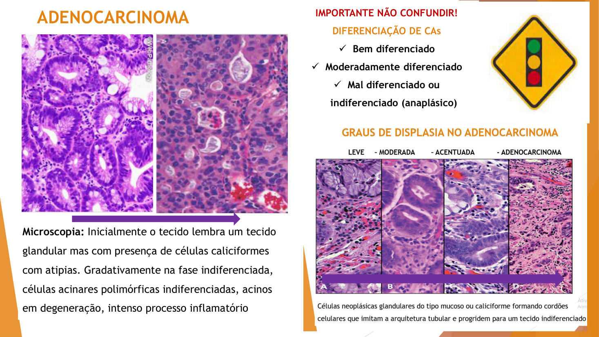
Diagnóstico, estadiamento e prognóstico
- Diagnóstico: EDA + biópsias incisionais múltiplas (lesões grandes são heterogêneas — colhe-se mais de uma amostra, com margem de mucosa normal para comparação); esofagografia baritada com o clássico padrão de "maçã mordida" (falha irregular do contraste onde o tumor invade a luz); TC para metástases (fígado e pulmão).
- Por que dissemina tão fácil: o esôfago quase não tem serosa e é justaposto à traqueia → fístulas são frequentes (pneumonia aspirativa), invasão de mediastino, pericárdio e aorta com hemorragias graves.
- Estadiamento TNM: T1–4 (profundidade de invasão — tumor intramucoso/CIS respeita a muscular da mucosa), N0–3 (linfonodos), M0–1 (metástase). Os estádios (somatória) de CCE e adenocarcinoma são tabelados separadamente. Lesão vegetante grande já é descrita como "neoplasia avançada" antes mesmo da biópsia.
- Prognóstico: sobrevida em 5 anos <30–40% — consequência do diagnóstico tardio. Daí o alerta social da aula: HDA, sangramento sem causa, ou paciente "se alimentando só de líquidos há 3 meses" precisam de investigação — isso existe em São Paulo, hoje.
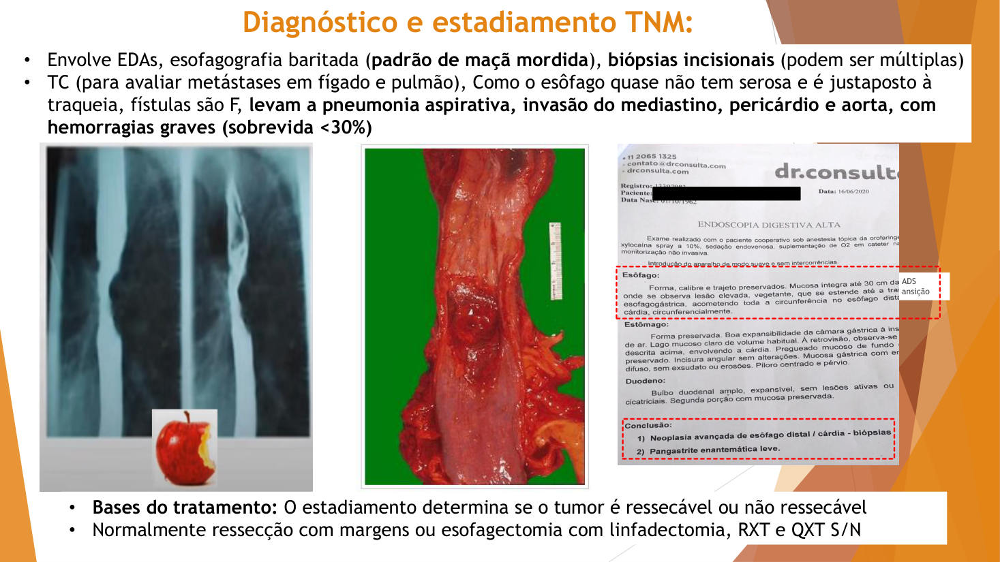
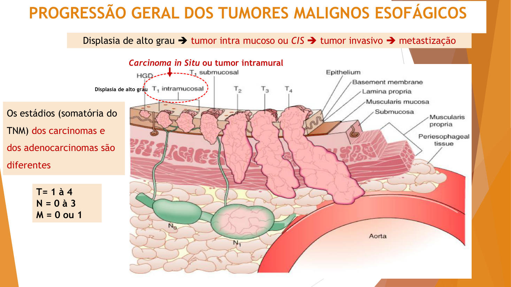
11 · Os três casos discutidos em aula
🩺 Caso 1 — Adalberto (abertura)
55 anos, pirose + regurgitação ácida + dor retroesternal há >6 meses, sem perda ponderal nem disfagia → grupo das doenças inflamatórias esofágicas, investigação por EDA (alternativa D do quiz). O caso existe para treinar o funil: cada alternativa descartada tinha um porquê (congênita: idade; benigna/maligna: sem disfagia, sem massa, sem emagrecimento).
🩺 Caso 2 — José da Silva, 39 anos (estudo dirigido de Barrett)
Paralisia cerebral leve (asfixia neonatal), obeso, DM2, mobilidade reduzida. Vômitos frequentes no 1º ano de vida; DRGE grave aos 6 anos → cirurgia antirrefluxo, com 3 décadas de melhora. Agora: dor retroesternal até hipocôndrio D, recidiva do refluxo noturno no último ano, automedicado com omeprazol 20 mg/dia sem melhora, 2 episódios de hematêmese na última semana. EDA: mucosa avermelhada lisa e homogênea >3 cm acima da linha Z, sem ulcerações; biópsia incisional com margem de mucosa típica. Anatomopatológico: numa margem, epitélio escamoso esofágico; na outra, epitélio tipo intestinal com células colunares e caliciformes em criptas regulares, intenso infiltrado mononuclear até a submucosa, ausência de displasia.
Respostas construídas em aula: (1) DDs: DRGE complicada × esôfago de Barrett (× heterotopia, que ela provocou no fim); (2) nenhum exame "vence" — endoscopia E histologia são obrigatórias juntas; (3) diagnóstico final: esôfago de Barrett de segmento longo, sem displasia (metaplasia = reversível tratando o refluxo); (4) se houvesse displasia de alto grau: muda tudo — raríssimamente reversível, âmbito da progressão, classificação de Viena, seguimento e tratamento agressivos.
🩺 Caso 3 — Questão ENAMED (fechamento, discutida alternativa por alternativa)
Homem, 62 anos, disfagia progressiva (sólidos → líquidos), perda ponderal significativa, anorexia, dor retroesternal; tabagista 40 anos + etilista crônico; emagrecido; EDA: lesão vegetante irregular com estenose no terço MÉDIO.
- A) Acalásia? Não — explica disfagia, mas acalásia é doença do EEI/terço distal e não produz lesão vegetante no terço médio.
- B) Estenose benigna? Não — estenose benigna existe, mas perda ponderal + lesão vegetante apontam para malignidade.
- C) Carcinoma de células escamosas obstruindo a luz pelo crescimento tumoral — CORRETA: terço médio, homem, tabaco+álcool (sinergismo), disfagia progressiva com emagrecimento.
- D) Anel de Schatzki? Membrana esofágica justificaria disfagia — mas não a lesão vegetante, nem a perda ponderal.
- E) Obstrução por dilatação? Contradição — o quadro é de constrição da luz por massa, não de dilatação.
🔗 HDA — para onde isso tudo converge
Hemorragia digestiva alta (hematêmese) tem origem em esôfago, estômago ou duodeno. Desta aula, os candidatos esofágicos: ruptura de varizes (cirrótico), esofagites/úlceras, Mallory-Weiss (pós-vômitos) e tumores ulcerados. É urgência do TGI superior → EDA.
✅ Resumo rápido da aula
- Funil de 4 grupos: congênitas · adquiridas não inflamatórias · inflamatórias (agudo×crônico, infeccioso×não, autoimune×imunomediado) · neoplásicas (benigno×maligno).
- Mucosa = epitélio escamoso estratificado não queratinizado + lâmina própria + muscular da mucosa (fronteira do carcinoma in situ). EEI = principal proteção antirrefluxo.
- Congênitas: ectopia gástrica (1/3 sup, patch achado de EDA) · atresia+fístula (RN engasgo/cianose, sonda dobra; Gross C >80%).
- Acalásia: tríade aperistalse + ↑tônus basal + relaxamento incompleto do EEI; 2ª = Chagas (megaesôfago); bico de pássaro.
- Hérnia de hiato: deslizante ~90% (linha Z acima do pinçamento) × paraesofágica = perigosa (estrangulamento).
- Varizes: hipertensão portal (cirrose 90%/esquistossomose) → 1/3 distal → ruptura = HDA emergência.
- Esofagites agudas: Candida (placas brancas destacáveis; PAS: hifas) · HSV (vesículo-ulcerosas; Tzanck) — contexto de imunossupressão; agudas quase não se biopsiam.
- DRGE: quebra dos mecanismos de proteção; pirose + atípicos; Los Angeles A–D; micro: hiperplasia basal + eosinófilos intraepiteliais; decúbito lateral esquerdo protege; IBP = sintomático.
- Barrett = metaplasia intestinal (caliciformes); diagnóstico obrigatório = EDA + biópsia; sem displasia reversível; displasia de alto grau ≈ CIS → Viena, conduta agressiva; principal fator de risco do adenocarcinoma.
- Benignas: papiloma (HPV 6/11, coilocitose, pedunculado) · leiomioma (muscular da mucosa, séssil, sem atipias).
- Malignas: CCE 80% — terço médio/sup, tabaco+álcool sinergismo, pérolas córneas · Adenocarcinoma — terço distal, do Barrett, homens brancos, obesidade em ascensão; "maçã mordida"; TNM; sem serosa → invasão por contiguidade; sobrevida 5a <30–40%.
🧫 Resumão Pré-Prova — Patologia do Esôfago
Revisão da véspera · Anato Pato II · só o que a professora enfatizou
- 4 grupos: congênitas (nascimento/infância) · adquiridas não inflamatórias (motilidade) · inflamatórias (agudo×crônico · infeccioso×não · autoimune×imunomediado) · neoplásicas (benigno×maligno).
- Sequência: anamnese+exame → DDs → exames → HD → confirmação. Perguntas: quem é o hospedeiro · padrão macro/micro · tempo de evolução.
- Nomenclatura: inflamação aguda = "esofagite"; crônica ganha NOME (DRGE, Barrett).
- Mucosa = epitélio escamoso estratificado não queratinizado (15–30 camadas) + lâmina própria + muscular da mucosa = fronteira mucosa/submucosa → define carcinoma in situ.
- 3 constrições; EEI (2–4 cm acima da JEG) = principal mecanismo protetor. 2ª constrição = vizinhança aorta/traqueia → invasão por contiguidade no CA.
- 1º terço = músculo estriado (voluntário); depois liso. Clearance: saliva ~3 L/dia + glândulas submucosas. EDA mede da arcada dentária superior (ADS). Só o esôfago abdominal tem serosa.
- Embrio: separação esôfago/traqueia na 4ª–6ª semana → falha = atresia/fístula.
- Ectopia (MGE): patch de mucosa gástrica no 1/3 SUPERIOR; assintomática/achado de EDA; se funcional → HCl → inflamação local. Micro: ilhas de epitélio colunar glandular.
- Atresia+fístula: RN na 1ª mamada — engasgo, cianose, regurgitação; sonda dobra. Gross tipo C >80% = atresia + fístula traqueoesofágica DISTAL. Fístula completa = incompatível com a vida → cirurgia neonatal. Associação: Down, cardíacas, geniturinárias.
- Disfagia insidiosa progressiva sólidos→líquidos; esofagograma: bico de pássaro; manometria mede pressão. Tto: nitratos → balão (dilatação pneumática) → miotomia.
- Hérnia de hiato: dilatação dos pilares diafragmáticos + EEI incompetente. Deslizante ~90% (linha Z ≥2 cm acima do pinçamento na EDA; associada à DRGE) × paraesofágica = a perigosa (estrangulamento/necrose; só aparece em retrovisão). Tto: tratar DRGE/peso; cirúrgico = fundoplicatura.
- Cirrose (90%) / esquistossomose → hipertensão portal → colaterais → plexo submucoso do 1/3 distal dilatado/tortuoso (+ varizes gástricas juntas).
- Assintomáticas até ruptura = HDA de difícil manejo = emergência (balão/EDA). Não são visíveis externamente.
| Candidíase | Herpética (HSV) | |
|---|---|---|
| Clínico | Placas brancas DESTACÁVEIS | Lesões vesículo-ulcerosas |
| Micro | PAS: hifas + leveduras na camada espinhosa | Células de Tzanck (gigantes multinucleadas c/ inclusões) |
| Contexto | Imunossupressão/disbiose · autolimitadas · biópsia só se persistir | |
- Outras: eosinofílica (alergias/intolerâncias, em ascensão) · química (soda cáustica) · física (radioterapia → mucosite). Todas podem dar estenose fibrocicatricial.
- Esofagite crônica sintomática por refluxo persistente sem esforço; dx GI + comum do Ocidente; 40+, gamers jovens, bebês (supino+líquido).
- Proteções que quebram: pressão basal do EEI · pilares diafragmáticos · JEG oblíqua · gravidade/postura · esvaziamento gástrico · saliva/clearance. Fatores: hérnia, tabaco, álcool, depressores do SNC, obesidade/gravidez (pressão intra-abdominal).
- Decúbito lateral ESQUERDO protege (líquido fica na grande curvatura); direito piora.
- Clínica: pirose; atípicos: tosse, rouquidão, faringite, broncoaspiração ("asma que era refluxo"). Complicações: erosão → úlcera → estenose péptica.
- Dx: clínica + EDA + pHmetria (padrão-ouro; pH ~4–3,5). Los Angeles A–D (nº de erosões, ≥/< 5 mm, % da circunferência).
- Micro: hiperplasia basal + alongamento de papilas + eosinófilos/linfócitos intraepiteliais (exocitose) + infiltrado mononuclear + vasos congestos.
- IBP (omeprazol) = sintomático, não corrige a causa.
- = METAPLASIA INTESTINAL (células caliciformes) do esôfago distal — adaptação à DRGE não tratada. "Célula inteligente vira intestinal (muco), não gástrica".
- Homens brancos 40–60 · +Sul (bebida quente — chimarrão pela temperatura). Mucosa em salmão aveludada; segmento curto <3 cm / longo ≥3 cm.
- Dx OBRIGATÓRIO = endoscopia + biópsia (imagem sozinha = pode ser DRGE; metaplasia sem imagem = pode ser heterotopia).
- Sem displasia → reversível tratando refluxo. Com displasia → lesão precursora; sai Los Angeles, entra classificação de VIENA (1–5); alto grau ≈ carcinoma in situ, raríssimo reverter, tto agressivo (~30% risco).
- Principal fator de risco do ADENOCARCINOMA.
- Mallory-Weiss: lacerações LINEARES da JEG por vômitos repetidos/induzidos (pós-álcool); transitórias, reparam; problema = persistência.
| Papiloma escamoso | Leiomioma | |
|---|---|---|
| Origem | Epitélio escamoso + HPV 6/11 (baixo risco) | Músculo liso (muscular da mucosa) |
| Macro | Papilomatoso/digitiforme, pedunculado, leucoplásico | Nódulo séssil, firme, mais profundo |
| Micro | Hiperplasia + paraqueratinização + COILOCITOSE (halo perinuclear = vírus) | Feixes uniformes de m. liso, núcleos alongados |
| Laudo | "Ausência de atipias ou mitoses atípicas" = benigno · tto: excisão endoscópica | |
- Lipoma: benigno comum, pode ficar grande (luz ampla).
| CCE (~80% no Brasil) | Adenocarcinoma (em ascensão) | |
|---|---|---|
| Local | Terços médio e superior | Terço distal (+ cárdia) |
| Quem | Homens 50+, mais negros | Homens brancos/caucasianos |
| Fatores | Tabaco+álcool (SINERGISMO), nitrosaminas/conservas (Aspergillus), déficit vit. A/C, acalásia persistente | Barrett (DRGE→Barrett→adeno, proporcional), obesidade |
| Macro | Placa/úlcera de bordas endurecidas → massa vegetante | Massa distal invadindo cárdia |
| Micro | Atipias em todas as camadas + PÉROLAS CÓRNEAS | Glândulas atípicas c/ caliciformes → desdiferenciação (bem/mod/mal dif.) |
- Genes: p53, CDKN2A. Progressão: displasia → CIS (respeita membrana basal/muscular da mucosa) → invasivo → metástase (contiguidade + linfática).
- Dx: EDA + biópsias múltiplas · baritado: "maçã mordida" · TC (fígado/pulmão). Sem serosa + colado na traqueia → fístula, mediastinite, aorta.
- TNM (T1–4/N0–3/M0–1; estádios de CCE ≠ adeno). Sobrevida 5a <30–40% (dx tardio). Disfagia progressiva + emagrecimento = investigar SEMPRE.
- Ectopia × Barrett: os dois têm tecido glandular no esôfago — ectopia = congênita, 1/3 superior; Barrett = metaplasia adquirida, distal, contígua à JEG.
- Acalásia × hérnia de hiato: opostos — acalásia = EEI hipertônico que não relaxa; hérnia = EEI/hiato frouxos.
- Deslizante × paraesofágica: a comum é a deslizante; a perigosa é a paraesofágica (estrangulamento).
- HPV 6/11 × 16/18: papiloma esofágico = 6/11 baixo risco; 16/18 = alto risco (colo do útero).
- Los Angeles × Viena: LA = erosões da DRGE; Viena = displasia/neoplasia (Barrett displásico em diante).
- Metaplasia × displasia: metaplasia = adaptação reversível; displasia = pré-maligna; alto grau ≈ CIS, quase nunca reverte.
- CIS × invasivo: a fronteira é membrana basal / muscular da mucosa.
- Bico de pássaro × maçã mordida: bico = acalásia (esofagograma); maçã mordida = câncer (baritado).
- Coilocitose: típica de vírus/HPV, mas não patognomônica.
- Omeprazol: alivia sintoma, não trata a causa da DRGE.
- "Sonda dobra no RN" → atresia esofágica (Gross C).
- "Placa branca destacável" → Candida · "vesículo-ulcerosa" → HSV · "Tzanck" → HSV.
- "Linha Z acima do pinçamento" → hérnia deslizante.
- "Mucosa em salmão" / "células caliciformes" → Barrett.
- "Laceração linear pós-vômito" → Mallory-Weiss.
- "Pérolas córneas" → CCE · "glândulas atípicas no distal" → adenocarcinoma.
- "Bebida quente/chimarrão + homem branco do Sul" → Barrett/adeno.
- "Cirrótico com hematêmese" → ruptura de varizes.
Banco de Questões — Patologia do Esôfago
Anato Pato II · Aula 01 · estilo ENADE/residência.